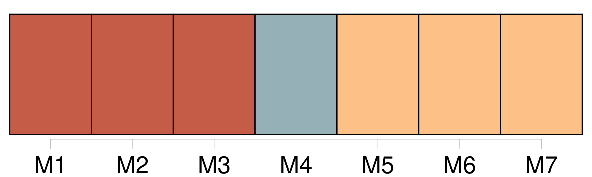
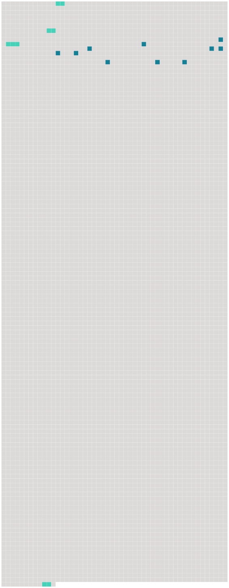

Longueur nb maillons : 14 mentions |
 |
Pourtant, si Rosalie était parfois un peu « sermonneuse » avec [ses frères] , comme elle était tendre aussi!! [14 phrases]
Cet écrit de la main de Rosalie nous apprend comment, avec [ses frères] et sa sœur, elle jouait dans le jardin et même dans la chambre de travail du philosophe. [5 phrases]
» [1 phrases] « [Nous] étions, nous dit -il, chez un ex-jésuite dont le talent consistait à faire croire aux parens que leurs enfans étaient ou des vauriens ou des sots. Il y réussissait si bien que, quoique [nous] fussions roués de coups et affamés, il fallut trois ans pour que mes parens fussent désabusés sur le compte de cet homme.
La faim [nous] rendait [voleurs] , les coups menteurs, lâches et rusés. « Un jour, [nous] étions invités chez [notre] tante, la marquise de Gentil, à Mon Repos, pour voir représenter Nanine devant Voltaire. [4 phrases]
On veut savoir ce que cela signifie, j'explique que [nous] mourons de faim ; il était difficile de ne pas [nous] croire … « De là [nous] fumes envoyés à Marschlins, château de M. de Salis et séminaire, à trois lieues de Coire. [258 phrases] Je vous défends expressément, et sous peine de me faire le chagrin le plus vif, de rien acheter ni pour moi, ni pour votre maman, ni pour [vos frères] |
 |
Il est possible de télécharger la ressource sur la page Ortolang |
Si vous avez des questions ou vous voyez des erreurs, merci d'envoyer un mail à silvia.federzoni89@gmail.com |